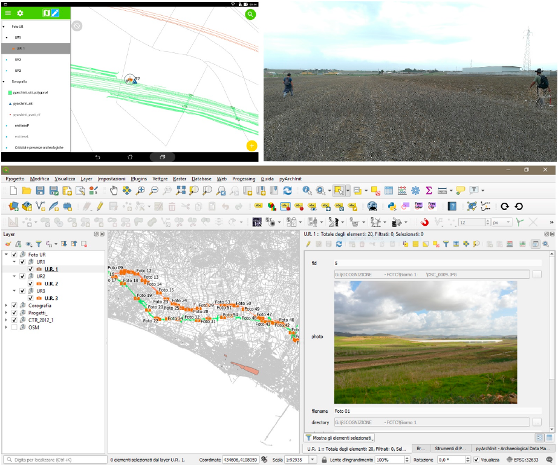
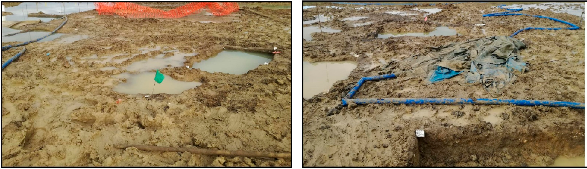
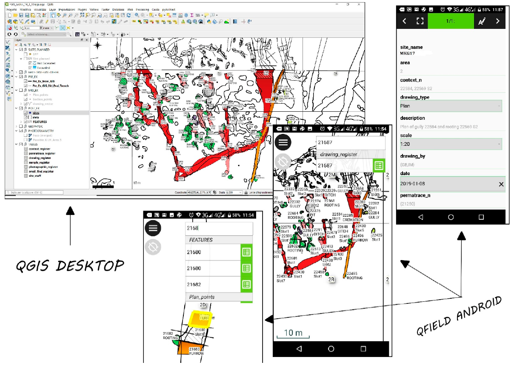

Evaluación de impacto patrimonial utilizando QField¶
From QGIS to QField and Vice Versa: How the New Android Application Is Facilitating the Work of the Archaeologist in the Field.
Roberto Montagnetti1 y Giuseppe Guarino2
† Presented at the ArcheoFOSS XIII Workshop—Open Software, Hardware, Processes, Data and Formats in Archaeological Research, Padova, Italy, 20–22 February 2019.
Abstract: The aim of this paper is to highlight the main benefits of using the QField app in archaeological jobs. In particular this article provides examples to use QField in open area excavation, Archaeological survey and impact assessment (HIA) projects.
Palabras clave: QField; archeology; VIARCH; HIA; QGIS
1. Introducción¶
The aim of this paper is to highlight the main benefits of using the QField app. An App that can be installed on an Android device for all archaeologists working in the field.
The main feature of this new application will allow the archaeologist to upload to his/her smartphone or tablet the .qgs project of the excavation based on the general information concerning the site that is already available to you. At this point, it is possible to implement the collection of data directly on site, maintaining constant updates to your system, thus allowing you to review the project throughout the excavation process.
¡El “SIG de bolsillo” con QField finalmente es una realidad!
Working with QField in the field allows us to significantly reduce registration and computerization time of inputting data into the database system, eliminating the digitisation of field registers and all related paperwork. The advantage of entrusting all of the information to the main GIS platform of the project (master), which is stored inside the PC, means this leaves only the task of checking the collected data, along with the bonus of in-depth topographical and geospatial analysis.
En este artículo, mostraremos un ejemplo práctico del uso integrado de QGIS y QField, relacionado con la excavación en un área abierta.
La metodología de intervención propuesta en este artículo se construyó a partir de la experiencia personal de los autores; esto se refiere específicamente a trabajos de excavación a cielo abierto en proyectos de arqueología comercial.
2. Principales características de QField¶
QField es una aplicación para Android que se puede descargar desde Google Play. Esta aplicación, aunque presenta una interfaz muy sencilla, cuenta con numerosas funciones, tales como:
- Herramientas para la digitalización en el campo;
- Edición de geometría y atributos;
- GPS;
- Posibilidad de cargar mapas base personalizados;
- Integración de la cámara del teléfono inteligente/tableta;
- Muchas otras funciones
QField puede considerarse una extensión móvil para QGIS. De hecho, permite visualizar y gestionar un proyecto SIG creado con QGIS en un teléfono inteligente o tableta Android. Esto permite al usuario conservar todos los temas, etiquetas y estilos del proyecto original (Figura 1).

{kind=link}
Además, al igual que en QGIS, podemos consultar cada capa dentro de QField obteniendo la información respectiva contenida en su tabla de atributos (sin embargo, también existen otras aplicaciones SIG para móviles como ArcGIS, LiPAD, Bentley Map Mobile, GVSig Mobile, Geopaparazzi y otras).
Para trabajar con un proyecto QGIS dentro de QField, el primer paso es configurar las propiedades de ese proyecto creado en QGIS como “guardar rutas relativas”.
Deberás crear una carpeta llamada “nombre_carpeta” en tu escritorio y guardar en esta ruta el archivo .qgs que deseas transferir al smartphone o tableta;
de igual forma, en la misma carpeta, debes introducir todos los datos (vectores, ráster y base de datos) que componen este proyecto QGIS.
Estos datos también pueden dividirse en otras subcarpetas.
Finalmente, debes copiar la carpeta completa ‘folder_name’ a la tableta, siguiendo dos posibles rutas:
- En la memoria interna: Android > datos > ch.opengis.QField > archivos > compartir;
- En la SD externa: Android > datos > ch.opengis.QField > archivos.
3. Trabajando con QField en un Estudio Arqueológico y un proyecto de Evaluación del Riesgos Arqueológicos¶
Hasta hace poco, los mapas en papel eran la única forma de registrar los rasgos arqueológicos y la visibilidad de los yacimientos en un trabajo de prospección arqueológica. Estos datos se digitalizaban posteriormente en un software CAD o SIG, creando así las fichas de cada yacimiento por separado en un documento digital sencillo.
Hoy en día, QField, gracias a su compatibilidad con QGIS, permite saltarse la transición del papel a lo digital o desde diferentes programas informáticos, reduciendo tiempo y costes.
El estudio arqueológico (para una descripción exhaustiva de los métodos del estudio arqueológico, véase Cambi y Terrenato, 1994, pp. 117-143, y Renfrew y Bahn, 2016 [1,2]) debe ir precedido de la construcción de una plataforma SIG que tenga en cuenta tanto los datos obtenidos durante la fase de trabajo de campo como los bibliográficos. Por este motivo, será necesario trabajar con dos tablas:
- Una de ellas es espacial, lo cual resulta útil en el campo.
- El otro es alfanumérico.
Ambas se combinarán en una única tabla espacial, útil para su consulta en el entorno SIG. Este proceso es posible mediante el uso de una base de datos geoespacial relacional como SpatiaLite y PostGIS o, alternativamente, mediante la creación de una unión entre las tablas y las geometrías.
Sin embargo, la gran ventaja de usar una geodatabase es la capacidad de crear consultas capaces de fusionar información de dos o más tablas en una sola tabla (vista) (para obtener información más detallada sobre el uso de SIG y geodatabases en arqueología, consulte Fronza, Nardini, Valenti 2009 [3]).
Este proceso agiliza aún más el trabajo de campo al minimizar la cantidad de datos que se deben almacenar durante la prospección arqueológica.
Los datos recopilados en campo durante el estudio se registrarán y digitalizarán mediante tres capas diferentes (punto, línea y polígono). Las tablas de atributos asociadas a las tres capas registran la siguiente información: Nombre del proyecto (cadena de texto), Municipio (cadena de texto), Ubicación (cadena de texto), Número de elemento (entero), Nombre del lugar (cadena de texto), Ubicación (cadena de texto), Fecha (Fecha), Definición del sitio (cadena de texto), Visibilidad (cadena de texto) y Fotos (cadena de texto).
Los valores de los atributos “Nombre del proyecto” y “Número de función” entre las dos tablas deben tener una restricción de unicidad para identificar solo un “Nombre del proyecto” y un “Número de función” únicos.
La plataforma SIG también debe contar con mapas base como Google Satellite, OpenStreetMap, ortofotos, etc. En este caso, utilizamos los siguientes mapas: Carta Técnica Regionale (1:10.000), OpenStreetMap y Google Satellite. Para optimizar el tamaño de estos mapas, creamos vistas previas (pirámides) en QGIS.
La posición de los elementos arqueológicos identificados puede registrarse mediante el GPS integrado. Sin embargo, para una mayor precisión, QField puede conectarse a una antena GNSS.
En los trabajos de consultoría arqueológica y evaluación de riesgos arqueológicos, se recomienda cargar en el proyecto SIG una capa de infraestructura que contenga la información geométrica, las medidas y demás datos de la infraestructura, además de una zona de influencia de la misma.
Tras configurar los aspectos básicos de nuestro proyecto en QGIS, necesitamos exportarlo mediante el complemento QFieldSync. Como alternativa, podemos copiar la carpeta que contiene el archivo del proyecto con la extensión *. de QGIS, la base de datos y los rásteres (o el GeoPackage que contiene nuestros rásteres: IGM, Basemap, etc.) a nuestro smartphone o tableta.
De forma predeterminada, QField crea una carpeta donde guardar los proyectos (Android/data/ ch.opengis.QField/files), pero siempre es mejor almacenarlos en un SSD externo, ya que si desinstalas QField de tu dispositivo, todas las carpetas y archivos que contienen se eliminarán corriendo el riesgo de borrar los datos.
Después de establecer las bases del proyecto GIS en QGIS, necesitamos exportarlas a QField a través de un complemento adecuado llamado QField-Sync.
Sin embargo, podemos realizar esa tarea incluso simplemente transfiriendo (copiar y pegar) el proyecto QGIS y el conjunto de datos relacionados a nuestro dispositivo Android. El proyecto QGIS debe ser guardado como .QGIS.
4. Beneficios y desventajas del uso de QField en un Estudio Arqueológico y trabajos de Evaluación de Riesgos Arqueológicos¶
QField, al igual que todas las herramientas de vanguardia, tiene algunos límites relacionados con el uso de los dispositivos; el principal de ellos puede ser causado por el escaso ancho de banda o la falta de Internet. En En este caso, no podemos tener una buena precisión en el registro de nuestros rasgos arqueológicos utilizando el GNSS. Al mismo tiempo, no podríamos cargar servicios WMS como Google Satellite, Open Street Map y otros. Otra desventaja está relacionada con la duración de la batería: mantener la pantalla, la conexión de datos y el GPS siempre activos reducirá drásticamente la duración de la batería de nuestro dispositivo, aunque podamos llevar con nosotros baterías portátiles. Por otro lado, los beneficios de usar QField son muchos; de hecho, nos permite reducir muchos procedimientos que debíamos realizar si hubiéramos registrado los rasgos arqueológicos identificados durante la prospección en un mapa de papel o si hubiéramos rellenado su información relacionada manualmente en hojas de papel. Además, otra ventaja es la posibilidad de utilizar QField para integrar la cámara del dispositivo o una antena GNSS. Todo esto hace que la recogida de datos y aumenta su precisión, al tiempo que reduce el tiempo, los costes y la mano de obra.
G.G.
5. Trabajar con QField en una excavación en un área abierta¶
En un escenario de excavación de área abierta, las ventajas y la conveniencia de utilizar una aplicación como QField son innumerables. Esto es así especialmente en los yacimientos arqueológicos comerciales comercial, donde muy a menudo los plazos para realizar los trabajos y los presupuestos disponibles para la investigación arqueológica son muy ajustados. Esto obliga a trabajar con la máxima optimización de los tiempos y los activos, a pesar de que las condiciones meteorológicas y de visibilidad sobre el terreno suelen ser escasas (Figura 2).

{kind=link}
Veamos ahora por qué el uso de QField facilita la reducción de los tiempos de trabajo y al mismo tiempo, garantiza el ahorro de recursos a invertir en la investigación arqueológica, proporcionando un ejemplo práctico del uso de la aplicación GIS para Android.
En este tipo de trabajo, el primer paso consiste en desnudar el área a investigar con el uso de maquinaria, con el objetivo de eliminar la capa superior del suelo y, finalmente, el subsuelo.
El paso siguiente consiste en la identificación de objetos espaciales arqueológicos tanto directamente directamente sobre el terreno como comparando los resultados de la teledetección aérea y el análisis geofísico cuando se utiliza este tipo de tecnología.
Los objetos espaciales arqueológicos identificados se detectan digitalmente mediante GPS o Estación Total.
Por último, se describen todas las intervenciones de excavación que deben realizarse en la zona de investigación (ranuras), donde es más relevante para entender la relación estratigráfica entre los elementos arqueológicos identificados.
Esta fase del trabajo se denomina "Pre-Ex".
El estudio previo a la exportación será la base topográfica para la creación de la plataforma SIG del proyecto en QGIS, junto con el mapa base de la zona, las tuneladoras y cualquier ortofotos aéreas del lugar. Dentro de la misma plataforma, también cargaremos una base de datos geográficos que contiene las capas necesarias para la digitalización de lo siguiente:
a. Los elementos arqueológicos identificados en el campo;
b Los espacios previstos;
c. Los contextos investigados y sus niveles relacionados;
d. Las líneas de planta y sección utilizadas para los dibujos manuales;
e. Todos los elementos que podamos necesitar detectar durante la investigación arqueológica del sitio.
Sin embargo, en la misma base de datos, también habrá tablas relacionadas con las hojas de papeleo.
Por lo tanto, son comparables a la versión digital de los registros en papel y otro papeleo relacionado que se utilizan habitualmente en las obras de construcción para la documentación de las excavaciones.
Esta base de datos (lo que viene a continuación es sólo un ejemplo de estructura de base de datos. Las tablas y geometrías pueden ser diferentes según las características de los sitios y la topología de investigaciones que deban realizarse. En cualquier caso, las tablas y los vectores deben estar relacionados entre sí para poder interactuar. QField reconoce las relaciones de proyecto establecidas en QGIS.) se compone de:
- Sitios (Vector): Contiene la lista y la descripción de todos los sitios en los que la empresa está funcionando.
- Context_Layer (Vector): Esta capa representa gráficamente todos los contextos identificados y excavado durante el proyecto de excavación.
- Ranuras (Vector): Esta capa representa gráficamente todas las ranuras excavadas y contiene la información del registro de la ranura de papel.
- Level_Layer (Vector): Esta capa representa gráficamente todos los niveles tomados durante la excavación de cada ranura.
- Drawings_Vector (Vector): Esta capa representa gráficamente las líneas de planta y sección utilizado para los dibujos manuales.
- Drawing_Point (Vector): Esta capa representa gráficamente los puntos por los que las líneas del plano y de la sección pasan.
- Context_Register (Sin geometría): registro digital, que contiene todo lo investigado contextos.
- Drawings_Register (Sin geometría): registro digital de todos los dibujos.
- Permatrace_Register (Sin geometría): registro digital de las hojas de permatrace.
- Sample_Register (Sin geometría): registro digital de las muestras recogidas.
- Photo_Register (Sin geometría): registro digital de todas las fotos tomadas.
- Small_Find_Register (Sin geometría): registro digital de todos los pequeños hallazgos recogidos.
- Finds_Bag_Register (Sin geometría): registro digital de todas las bolsas de hallazgos recogidas durante la excavación.
- Context_Sheets (Sin geometría): Esta capa es la versión digital del registro de las hojas de contexto y contiene toda la información relacionada con cada contexto investigado.
Llegados a este punto, basta con transferir el proyecto maestro creado en QGIS con toda la "relación de proyectos" y los "controles" a la tableta o el teléfono inteligente y gestionarlo directamente in situ con QField para apreciar inmediatamente sus ventajas y su comodidad (Figura 3).

{kind=link}
De hecho, principalmente, al utilizar este sistema, los arqueólogos que trabajan sobre el terreno podrán registrar directamente los números de contexto identificados durante la excavación dentro de QField, en la correspondiente tabla de "registro de contexto" de la base de datos QField.
Este aspecto ya agiliza las operaciones in situ al ahorrar el tiempo que generalmente se tarda en de ir y venir del lugar al recinto o del lugar al coche/furgoneta y viceversa, para para elaborar los registros en papel, sobre todo si se tiene en cuenta que los coches y los recintos se encuentran a una distancia considerable de la zona de excavación.
Además, como generalmente sólo hay un dispositivo en el sitio y éste suele estar en manos de el director del yacimiento o los supervisores, esto les facilitaría la comprobación de que los arqueólogos de campo asignan los números correctos a los contextos identificados.
Muy a menudo, en un lugar tienden a confundirse, especialmente cuando la zona de excavación del lugar es pobre debido a condiciones meteorológicas adversas. Junto con los problemas anteriores, también pueden encontrarse errores como registrar el mismo rasgo con diferentes números de corte o asignar los mismos números de contexto a objetos espaciales diferentes.
Esto ocurre aún más frecuentemente cuando el equipo de campo está compuesto por numerosos arqueólogos que trabajan en franjas de excavación separadas entre sí. Estas franjas pueden estar esparcidas alrededor del área de excavación, lo que dificulta la interacción y la comunicación entre ellos.
Esta cuestión también está relacionada con otro problema, que hace que, para los que trabajan en de campo, es imposible tener una visión general constante de la zona de investigación y de los objetos espaciales arqueológicos identificados, lo que a menudo provoca confusión y errores durante el registro de los números de contexto.
Por lo tanto, desde este punto de vista, QField representa un verdadero avance al dar las siguientes posibilidades a las personas que trabajan in situ, en cualquier momento:
i. Tener una visión general de la zona de excavación;
ii. Consultar los elementos arqueológicos estudiados;
iii. Comprobar la forma y la orientación de los elementos arqueológicos identificados en la fase Pre-Ex, que deben ser excavados incluso cuando las condiciones del lugar son malas.
QField ayuda a superar los diversos retos que se presentan en el campo: el tiempo perdido por el tiempo inclemente y húmedo, y el suelo siempre empapado y embarrado por la gente y los vehículos que acceden continuamente al lugar. Esto hace que los elementos arqueológicos identificados se vuelvan irreconocibles después de varios días de haber sido despojados del yacimiento (Figura 2).
Utilizando el GPS del dispositivo, ya que permite al usuario navegar dentro del área de excavación y encontrar, aunque con un cierto margen de error, los elementos arqueológicos que hay que excavar, incluso cuando la visibilidad en el lugar es escasa.
Asimismo, al hacerlo, cuando las condiciones de visibilidad son malas, es más fácil centrarse con las aberturas en los objetos arqueológicos que se han identificado previamente en la fase Pre-Ex fase, lo que evita el error de cálculo de la excavación en los lugares naturales.
Un ejemplo típico de esto es cuando hay surcos que atraviesan el campo, y cada vez es más difícil ver toda su longitud a simple vista.
Normalmente, para remediar este tipo de problemas, los arqueólogos utilizan mapas impresos de la zona de excavación; sin embargo, aunque esto puede ser ciertamente una ayuda, en la práctica, no son de ninguna manera tan convenientes como los mapas digitales y, por tanto, de QField, por una serie de razones:
- Los mapas impresos se deterioran muy rápidamente debido al viento, la humedad y especialmente cuando son manipulados por manos humanas.
- Para contener toda la zona de excavación, a menudo deben imprimirse en formatos muy grandes, que requiere trazadores particulares, lo que supone un coste considerable y los hace dificultoso de usar.
- Los mapas en papel no son interactivos, lo que significa que no puede hacerles preguntas.
- No resuelven el problema de tener que centrar con precisión los elementos arqueológicos, que deben ser investigados con las ranuras cuando las condiciones de visibilidad en el sitio son paupérrimos.
En particular, el uso de QField en la obra simplifica la carga de trabajo de los directores y supervisores en la planificación de las intervenciones de excavación, permitiéndoles instruir fácilmente a los arqueólogos de campo directamente en la zona de excavación. De este modo, podrán formar al equipo de campo con información precisa sobre los elementos que tendrán que excavar, apoyando su explicación con la ayuda gráfica de la tableta y con detalles relacionados con lo que ya se ha investigado y cargado en la base de datos del proyecto.
Además del trabajo de campo, QField facilita el trabajo de los arqueólogos incluso en la fase de registro, simplificando su trabajo en la elaboración de la documentación. Como ya hemos mencionado, pueden consultar continuamente la tableta para obtener la información necesaria para incluirla en sus hojas de documentación en papel, como los números de sección o de plano de los contextos que han excavado, junto con los números de las fotos de los mismos contextos, o cualquier otra información relacionada.
Además, les resultará mucho más fácil dibujar los planos de situación que se que generalmente se exigen en las hojas de contexto, ya que dispondrán de mucha más información para interpretar lo que han excavado.
Otro aspecto muy importante a tener en cuenta cuando se trabaja con QField es que existe la posibilidad de eliminar por completo el proceso de registro manual de los números de abertura, números de contexto, números de dibujo, números de muestra, números de foto y etc. Simultáneamente, al utilizar este sistema, también podemos evitar cuestiones como:
- La introducción manual de los registros en papel en la base de datos del proyecto;
- El problema de descifrar caligrafías incomprensibles, que aumentan enormemente la posibilidad de cometer errores de transcripción.
De hecho, las caligrafías poco claras son un problema recurrente relacionado con el registro manual de la documentación de las excavaciones y, en particular, de los registros. Esto también va a afectar la exactitud de la información que debe introducirse en la base de datos durante la informatización.
Además, el arqueólogo que intervenga en los trámites debe incluir en su documentación números de contexto, números de dibujo y otros tipos de información relacionados con los elementos arqueológicos y en relación con los suyos, que han sido excavados y registrados por otros colegas. En esta circunstancia, confundir un número por otro tal vez debido a la letra poco clara del colega, es un error muy común.
El peor de los casos significa que:
- Ya no habrá coincidencia entre los registros digitales de la base de datos y el papel registros;
- La información que figura en varias hojas de contexto no será fiable;
- En ambos casos (como se ha mencionado anteriormente).
Por lo tanto, tendremos que dedicar mucho tiempo y esfuerzo a rastrear el error y corregirlo.
En cambio, el uso de una grabación digital elimina este problema y facilita la comprobación de los errores.
La principal ventaja de las herramientas del SIG es que nos permiten consultar los objetos dándonos la posibilidad de cruzar los datos, lo que acelera el proceso de comprobación.
Por poner un ejemplo práctico, si necesita ajustar el número de un contexto, o un dibujo o cualquier otra cosa dentro de un registro digital por un número, con la "calculadora de campo" de QGIS, se convierte en una tarea fácil que sólo lleva unos segundos.
Piense en el tiempo que le llevaría realizar la misma tarea utilizando registros y documentación en papel, especialmente cuando se trabaja con cantidades considerables de datos recogidos en una excavación de gran envergadura.
En este caso, primero debe rastrear la carpeta que contiene la serie numérica del número que hay que revisar, y luego recorrer uno a uno todos los registros hasta encontrar el número que hay que modificar y finalmente corregir, junto con todos los números posteriores. No sólo habrá que corregirlo en los registros, sino también en las secciones específicas de las hojas de contexto.
En otras palabras, si un contexto, un dibujo o un número de foto se ha registrado incorrectamente no basta con corregir sólo el registro, sino también toda la documentación relacionada con el número que se ha mencionado.
Por lo tanto, al utilizar un registro digital (tabla), la operación sólo le llevará unos minutos; sin embargo, si se trabajara en la documentación en papel a mano, podría llevar numerosas horas de trabajo.
Un último aspecto significativamente importante a tener en cuenta es el ahorro de papel y, en consecuencia, la cantidad de dinero que supone. El uso de QField y la documentación nos permite gestionar eficazmente los datos de las excavaciones. Al trabajar de este modo, ya no es necesario imprimir los planos de prospección, los registros y las hojas de papeleo.
No obstante, si la autoridad competente (arqueología comarcal) o el cliente solicitan explícitamente una versión en papel de toda la documentación elaborada in situ, será posible imprimir todo al final del proyecto, sólo una vez que se hayan realizado todas las modificaciones. Esto ayuda a evitar el desperdicio innecesario de papel, junto con todos los demás problemas que se han mencionado anteriormente.
Incluso en este caso, el "compositor de impresión" de QGIS nos permite desarrollar diseños personalizados que se pueden guardar y utilizar en cualquier momento.
6. Conclusiones¶
En un mundo cada vez más digital, es inaceptable seguir trabajando en papel especialmente porque, al final del proceso, toda la documentación en papel debe ser digitalizada para necesidades de archivo. Hoy, de hecho, tanto los museos como los almacenes de las empresas arqueológicas tienen menos espacio disponible para el almacenamiento de carpetas de papel. En este punto, sería beneficioso gestionar los datos en formato digital al principio del proceso de excavación, ahorrando inmediatamente tiempo y recursos. de la excavación, ahorrando inmediatamente tiempo y recursos.
Escanear los documentos PDF de los registros, las hojas de contexto y, en general, toda la documentación producida in situ no es una solución práctica y sostenible. Como ya se ha mencionado anteriormente, a menudo, esta documentación en proyectos de excavación extensos se compone de miles de hojas de papel; reto a cualquiera a reconstruir una matriz de excavación revisando todos los informes estratigráficos en el escaneo del PDF del papeleo. Este tipo de trabajo obliga a desplazarse continuamente hacia arriba y hacia abajo por el documento PDF en busca de las relaciones entre los distintos contextos, lo que supone una importante pérdida de tiempo y energía; sin ninguna consideración a los costes que supone el escaneo de miles de hojas.
Las excavaciones arqueológicas se ven constantemente impulsadas por plazos estrictos y cada vez más cortos plazos. El uso de los SIG para la gestión de los datos de las excavaciones ya no puede ser ignorado. Actualmente, la posibilidad de contar con una plataforma SIG "de bolsillo" y de código abierto, como QField representa realmente una oportunidad única para facilitar el trabajo de los arqueólogos sobre el terreno, más rápido y preciso.
Como se ha mencionado anteriormente, es mucho más fácil construir la matriz y compilar el escalonamiento de los elementos arqueológicos identificados trabajando con un sistema digital durante la fase Post-Ex. Así, sólo un instrumento como el SIG, que nos da la posibilidad de lanzar consultas y cruzar datos continuamente, nos permite realizar este tipo de trabajo rápida y eficazmente.
Al mismo tiempo, el SIG nos permite tener una visión continua de los datos producidos in situ y aplicar la información relativa a la investigación mediante el análisis geoespacial, lo que ayuda a facilitar la reconstrucción interpretativa final.
En resumen, ya no se puede aceptar el principio de que el papel es eterno. En primer lugar porque no es cierto, y en segundo lugar, se deteriora con el tiempo, especialmente cuando, como en la mayoría de los casos, se guarda en los sótanos de los archivos, museos o yacimientos de empresas arqueológicas.
Además, los documentos en papel conllevan enormes dificultades logísticas para compartir y consultar datos, en comparación con la documentación digital, que puede compartirse fácilmente.
R.M.
Declaración de la Junta de Revisión Institucional: No aplicable.
Declaración de consentimiento informado: No aplicable.
Referencias
- Cambi, F.; Terrenato, N. Introduzione All’archeologia dei Paesaggi; Carocci Editore: Roma, Italia, 1994; pp. 117–143.
- Renfrew, C.; Bahn, P. Archaeology, Theories, Methods, and Practice. Archaeol. J. 2016, 148, 329–330.
- Fronza, V.; Nardini, A.; Valenti, M. Informatica e Archeologia Medievale: L’esperienza Senese; All’insegna del Giglio: Florencia, Italia, 2009.